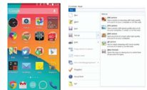
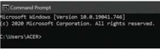

Simak Penjelasan Disamping
Interaksi Manusia dan Komputer
Berbagai macam jenis interaksi dapat dilakukan oleh pengguna dengan sistem komputer, di antaranya seperti berikut.
- Berbasis GUI (Graphical User Interface)
Merupakan antarmuka yang menggunakan menu grafis untuk memudahkan pengguna berinteraksi dengan komputer. GUI merupakan antarmuka pada sistem operasi komputer yang menggunakan menu grafis. Pengguna berinteraksi melalui ikon, menu, dialog dengan button dan text box, radio button (untuk satu pilihan), atau checkbox (untuk banyak Pilihan). - Berbasis CLI
Sistem operasi berbasis CLI merupakan tipe antarmuka melalui text-terminal. Pengguna menjalankan perintah dan program di sistem operasi tersebut dengan cara mengetikkan baris-baris tertentu. - Melalui Suara (Audio)
Antarmuka menggunakan suara memungkinkan pengguna mengucapkan sesuatu dan hasilnya akan direkam, dalam bentuk format audio. Antarmuka ini hanya dimungkinkan jika perangkat keras menyediakan perekam suara dan melalui aplikasi. - Melalui Gambar (Video)
Antarmuka menggunakan gambar hanya dimungkinkan jika perangkat keras menyediakan kamera. Kamera akan merekam gambar dan melalui aplikasi akan menyimpan gambar dalam format video. - Melalui Berbagai Piranti Masukan Lainnya
Selain melalui perangkat lunak, pengguna dapat berinteraksi langsung ke komputer melalui piranti masukan, seperti yang dijelaskan sebelumnya (keyboard, joystick, mouse, touchpad, layar sentuh, keyboard virtual, dll).

